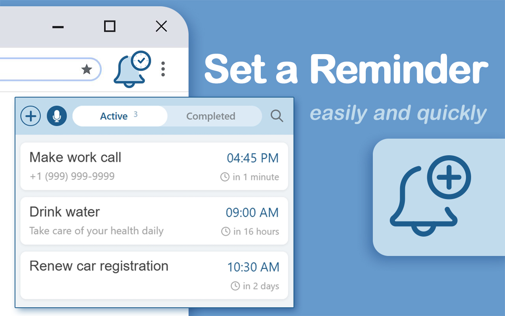
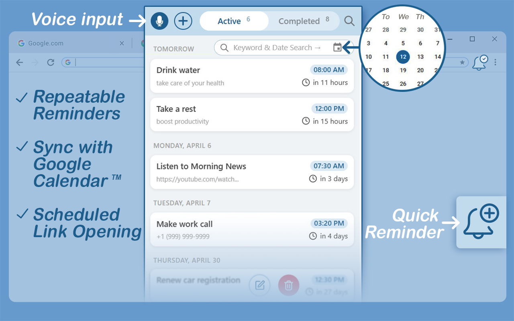

With Set a Reminder, you can add tasks by voice or text. A daily reminder app for tasks, meetings, habits, calls. Quick and easy!


Stop losing track of important tasks and meetings. With Set a Reminder, you can capture everything instantly — by voice or text — so you never miss what matters.
🔔 Create a Reminder in Seconds
How to set a reminder without the hassle? Click, speak, or type — and it's done. No complex menus, no opening websites, no navigating away — just a couple of quick actions. Whether it's a one-time task or a daily routine, you can set a reminder for anything in just a few seconds.
📈 Your Personal Productivity Powerhouse
1️⃣ Work: Set a meeting reminder for a stand-up or text appointment reminders for a follow-up.
2️⃣ Life: Remind me to buy groceries, schedule a reminder call with a friend, or never miss a birthday.
3️⃣ Habits: Create a daily reminder to drink water, take a break, or meditate.
4️⃣ Planning: Use it as a task manager to outline your day or a quick voice-to-notes tool for ideas.
💎 The Core Advantage: Just Say and Done
Our philosophy is built on speed. The moment a thought strikes — whether it's a to-do or a crucial appointment — just activate the extension and say it. Create a reminder or add a reminder by voice for any task, and it's captured instantly. One click — add reminder. Get back to work.
🎙️ Forget Clicking, Start Talking — The Power of Voice
Why get distracted by typing when you can just speak? With our voice reminder extension, you simply click the icon and say a phrase naturally. We've built advanced speech-to-text technology that accurately captures every word. You can use any phrases to set a reminder:
💬 take a break in 30 minutes
💬 set a reminder to call a friend tomorrow at 11 am
💬 in 2 hours, call a courier
💬 set a reminder for me to submit the report to my boss
💬 remind me tomorrow at 1 pm that my sister is arriving on Monday
💬 set a reminder for next week, Tuesday at 8 am – that mom arrives
⚡ Quick Text Entry — When Silence Wins
Not in the mood to speak? Just type. Besides voice memos, the app allows you to create text notes. Use text input when you're on a call, listening to music, or prefer quiet focus. Voice or text, whatever works for you.
⌨️ Keyboard Shortcuts for Power Users
For those who live at the keyboard, we've got you covered. Use hotkeys to open the extension instantly — no mouse needed. Start adding reminders without lifting your hands from the keyboard.
💠 Multi-Purpose Tool
Use it as your daily planner for work tasks, a place for voice notes, or to set appointment reminders for anything — from meetings to personal events. Perfect for daily reminders like medication, workouts, or journaling.
You choose how to use this extension:
1. Meeting reminder — never miss a call, stand-up, or deadline
2. Calendar planner — organize your day in seconds
3. Appointment reminder app — keep every commitment on track
4. Your choice — pick what works for you, whether it's one purpose or all of them
🔄 Seamless Google Calendar™ Sync — With Full Control
If you've been using an iPhone reminders app or an Android reminders app, you know the struggle — your reminders stay on your phone, not on your PC or laptop. Set a Reminder changes that. Just install our extension, connect your Google Calendar, and everything you create in this extension will instantly appear on your mobile device as Google reminders.
🌐 Works Completely Offline
No internet? No problem. Set a Reminder works fully offline — create, edit, and receive notifications without any connection. Your reminders are stored locally and sync automatically when you're back online. Perfect for flights, commutes, or areas with spotty coverage.
🔒 Privacy First — Your Data Stays Yours
We take your privacy seriously. We don't sell or analyze your personal data. Your reminders, notes, and habits are private by design. With optional Google Calendar sync, you choose what leaves your device. Just a tool that respects you.
📝 Rich Notes, Not Just Titles
Need to capture more than a quick reminder? Use the details section to store meeting agendas, shopping lists, or client notes. It's not just a reminder — it's a lightweight note-taking tool that keeps all your context in one place.
✨ Ready to experience the future of reminders?
Stop letting tasks slip your mind. Install Set a Reminder now and turn your thoughts into scheduled actions with just your voice. It's the simplest way to stay on top of things in a busy world. Click Add to Chrome and take the first step toward a more organized life.